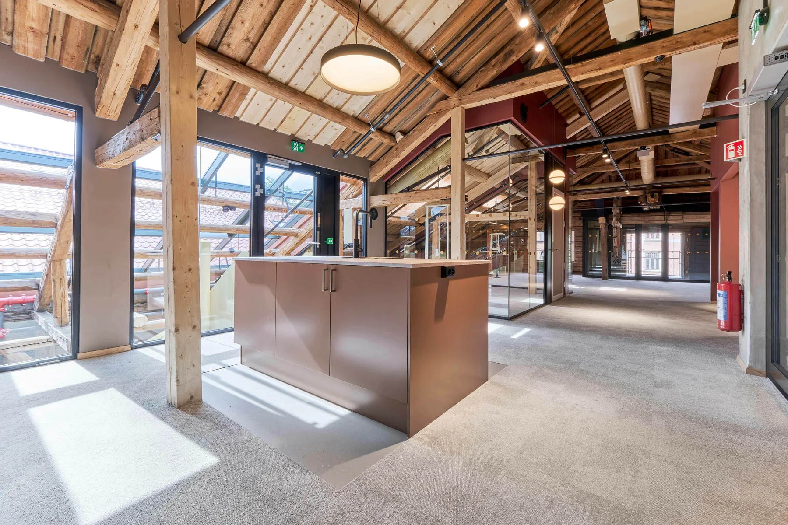
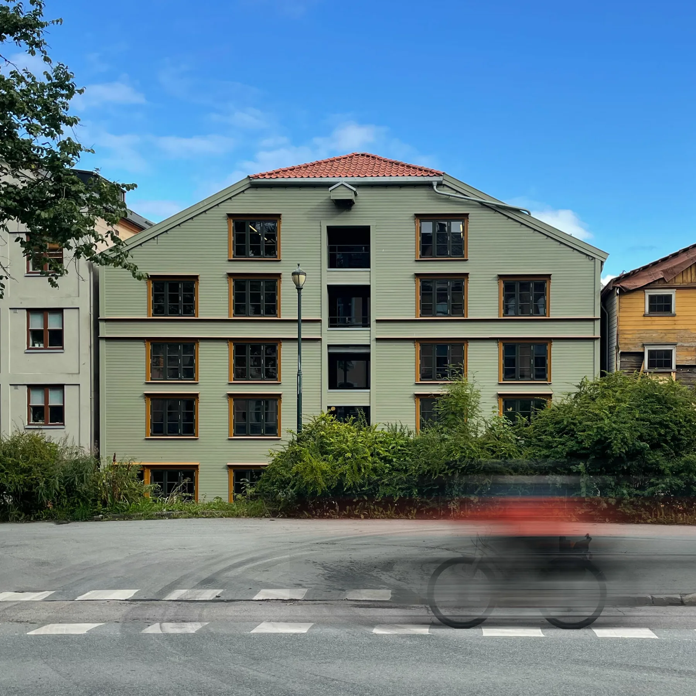
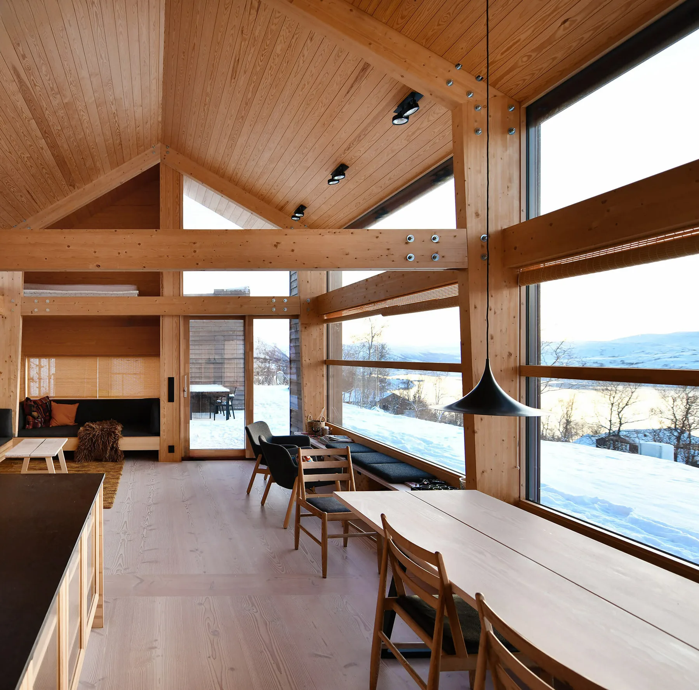
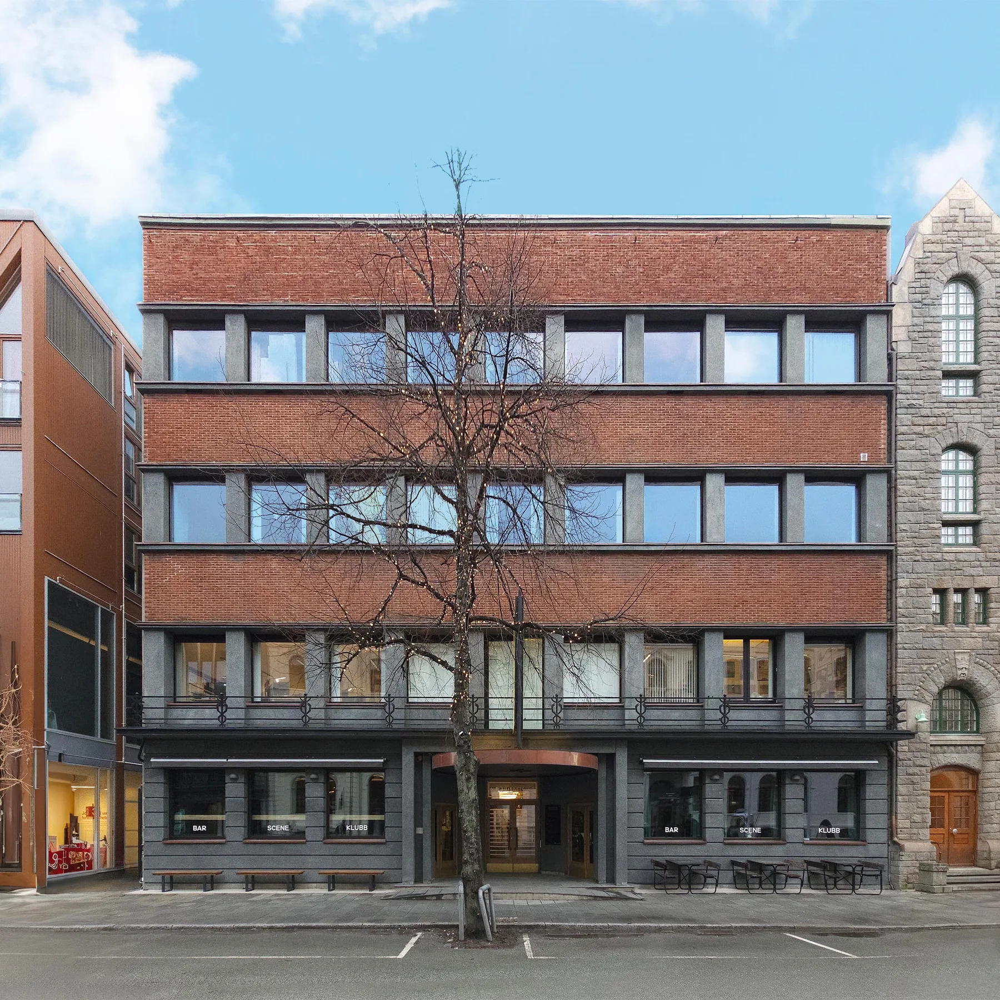
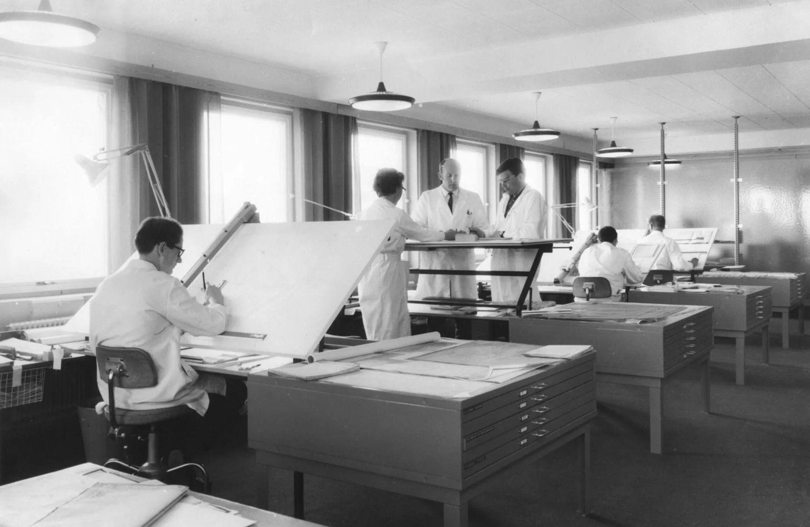
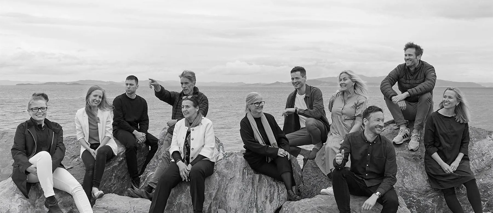

Trondheim · Etablert 1955
Rom for livet.
Bygget for tiden.
Arkitektur, interiør og byutvikling.
Med respekt for det som var.
Og omtanke for det som kommer.
Et langt perspektiv.
Et åpent blikk.
Vi er arkitekter og interiørarkitekter med røtter i Trondheim. Siden Knut Bergersen etablerte kontoret i 1955, har vi gitt form til steder der mennesker bor, arbeider og møtes.
Vi tegner nytt og gir eksisterende bygg et nytt liv. Alltid med nysgjerrighet for stedet, materialene og menneskene som skal bruke det.
Bli kjent med ossSteder med
egenart.
Nye rom. Nye muligheter.
Et utvalg fra vår praksis.

Kjøpmannsgata 15
Transformasjon, restaurering og rehabilitering av bryggehus

Hytte på Oppdal
Raust men kompakt i fjellheimen

Næringsforeningen i Trondheim
Rehabilitering og tilbakeføring av funksjonalistisk bygg

Leütenhaven sykkelhotell
Parkeringshusnedkjørsel transformert til sykkelparkering
68 prosjekter · Mange ulike perspektiver
Se hele prosjektarkivetHistorien sitter
i veggene.

Et navn som har fulgt byen i generasjoner. Vi tar med oss erfaringen videre — i møte med nye mennesker, nye oppgaver og nye måter å bruke det som allerede finnes på.
Les historien vårGod arkitektur
skapes sammen.
Møt alle på kontoret
I en gammel kompassfabrikk, midt mellom Torget og Nordre gate, deler vi tanker, kunnskap og arbeidsbord.
Det som
beveger oss.
Alle nyheterLa oss begynne med en samtale